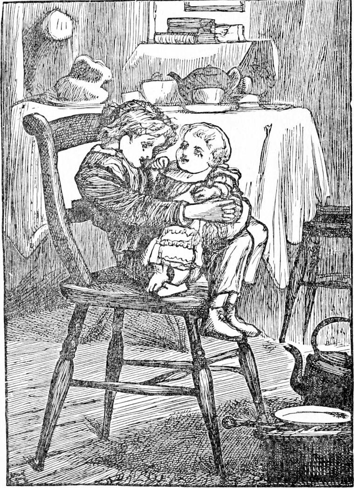

THE wind blew loud, but Diamond slept a deep sleep, and never heard it. My own impression is that every time when Diamond slept well and remembered nothing about it in the morning, he had been all that night at the back of the north wind. I am almost sure that was how he woke so refreshed, and felt so quiet and hopeful all the day. Indeed he said this much, though not to me—that always when he woke from such a sleep there was a something in his mind, he could not tell what—could not tell whether it was the last far-off sounds of the river dying away in the distance, or some of the words of the endless song his mother had read to him on the sea-shore. Sometimes he thought it must have been the twittering of the swallows—over the shallows, you, know; but it may have been the chirping of the dingy sparrows picking up their breakfast in the yard—how can I tell? I don't know what I know, I only know what I think; and to tell the truth, I am more for the swallows than the sparrows. When he knew he was coming awake, he would sometimes try hard to keep hold of the words of what seemed a new song, one he had not heard before—a song in which the words and the music somehow appeared to be all one; but even when he thought he had got them well fixed in his mind, ever as he came awaker—as he would say—one line faded away out of it, and then another, and then another, till at last there was nothing left but some lovely picture of water or grass or daisies, or something else very common, but with all the commonness polished off it, and the lovely soul of it, which people so seldom see, and, alas! yet seldomer believe in, shining out. But after that he would sing the oddest, loveliest little songs to the baby—of his own making, his mother said; but Diamond said he did not make them; they were made somewhere inside him, and he knew nothing about them till they were coming out.
When he woke that first morning he got up at once, saying to himself, “I've been ill long enough, and have given a great deal of trouble; I must try and be of use now, and help my mother.” When he went into her room he found her lighting the fire, and his father just getting out of bed. They had only the one room, besides the little one, not much more than a closet, in which Diamond slept. He began at once to set things to rights, but the baby waking up, he took him, and nursed him till his mother had got the breakfast ready. She was looking gloomy, and his father was silent; and indeed except Diamond had done all he possibly could to keep out the misery that was trying to get in at doors and windows, he too would have grown miserable, and then they would have been all miserable together. But to try to make others comfortable is the only way to get right comfortable ourselves, and that comes partly of not being able to think so much about ourselves when we are helping other people. For our Selves will always do pretty well if we don't pay them too much attention. Our Selves are like some little children who will be happy enough so long as they are left to their own games, but when we begin to interfere with them, and make them presents of too nice playthings, or too many sweet things, they begin at once to fret and spoil.
“Why, Diamond, child!” said his mother at last, “you're as good to your mother as if you were a girl—nursing the baby, and toasting the bread, and sweeping up the hearth! I declare a body would think you had been among the fairies.”
Could Diamond have had greater praise or greater pleasure? You see when he forgot his Self his mother took care of his Self, and loved and praised his Self. Our own praises poison our Selves, and puff and swell them up, till they lose all shape and beauty, and become like great toadstools. But the praises of father or mother do our Selves good, and comfort them and make them beautiful. They never do them any harm. If they do any harm, it comes of our mixing some of our own praises with them, and that turns them nasty and slimy and poisonous.
When his father had finished his breakfast, which he did rather in a hurry, he got up and went down into the yard to get out his horse and put him to the cab.
“Won't you come and see the cab, Diamond?” he said.
“Yes, please, father—if mother can spare me a minute,” answered Diamond.
“Bless the child! I don't want him,” said his mother cheerfully.
But as he was following his father out of the door, she called him back.

“Diamond, just hold the baby one minute. I have something to say to your father.”
So Diamond sat down again, took the baby in his lap, and began poking his face into its little body, laughing and singing all the while, so that the baby crowed like a little bantam. And what he sang was something like this—such nonsense to those that couldn't understand it! but not to the baby, who got all the good in the world out of it:— baby's a-sleeping wake up baby for all the swallows are the merriest fellows and have the yellowest children who would go sleeping and snore like a gaby disturbing his mother and father and brother and all a-boring their ears with his snoring snoring snoring for himself and no other for himself in particular wake up baby sit up perpendicular hark to the gushing hark to the rushing where the sheep are the woolliest and the lambs the unruliest and their tails the whitest and their eyes the brightest and baby's the bonniest and baby's the funniest and baby's the shiniest and baby's the tiniest and baby's the merriest and baby's the worriest of all the lambs that plague their dams and mother's the whitest of all the dams that feed the lambs that go crop-cropping without stop-stopping and father's the best of all the swallows that build their nest out of the shining shallows and he has the merriest children that's baby and Diamond and Diamond and baby and baby and Diamond and Diamond and baby—
Here Diamond's knees went off in a wild dance which tossed the baby about and shook the laughter out of him in immoderate peals. His mother had been listening at the door to the last few lines of his song, and came in with the tears in her eyes. She took the baby from him, gave him a kiss, and told him to run to his father.
By the time Diamond got into the yard, the horse was between the shafts, and his father was looping the traces on. Diamond went round to look at the horse. The sight of him made him feel very queer. He did not know much about different horses, and all other horses than their own were very much the same to him. But he could not make it out. This was Diamond and it wasn't Diamond. Diamond didn't hang his head like that; yet the head that was hanging was very like the one that Diamond used to hold so high. Diamond's bones didn't show through his skin like that; but the skin they pushed out of shape so was very like Diamond's skin; and the bones might be Diamond's bones, for he had never seen the shape of them. But when he came round in front of the old horse, and he put out his long neck, and began sniffing at him and rubbing his upper lip and his nose on him, then Diamond saw it could be no other than old Diamond, and he did just as his father had done before—put his arms round his neck and cried—but not much.
“Ain't it jolly, father?” he said. “Was there ever anybody so lucky as me? Dear old Diamond!”
And he hugged the horse again, and kissed both his big hairy cheeks. He could only manage one at a time, however—the other cheek was so far off on the other side of his big head.
His father mounted the box with just the same air, as Diamond thought, with which he had used to get upon the coach-box, and Diamond said to himself, “Father's as grand as ever anyhow.” He had kept his brown livery-coat, only his wife had taken the silver buttons off and put brass ones instead, because they did not think it polite to Mr. Coleman in his fallen fortunes to let his crest be seen upon the box of a cab. Old Diamond had kept just his collar; and that had the silver crest upon it still, for his master thought nobody would notice that, and so let it remain for a memorial of the better days of which it reminded him—not unpleasantly, seeing it had been by no fault either of his or of the old horse's that they had come down in the world together.
“Oh, father, do let me drive a bit,” said Diamond, jumping up on the box beside him.
His father changed places with him at once, putting the reins into his hands. Diamond gathered them up eagerly.
“Don't pull at his mouth,” said his father, “just feel, at it gently to let him know you're there and attending to him. That's what I call talking to him through the reins.”
“Yes, father, I understand,” said Diamond. Then to the horse he said, “Go on Diamond.” And old Diamond's ponderous bulk began at once to move to the voice of the little boy.
But before they had reached the entrance of the mews, another voice called after young Diamond, which, in his turn, he had to obey, for it was that of his mother. “Diamond! Diamond!” it cried; and Diamond pulled the reins, and the horse stood still as a stone.
“Husband,” said his mother, coming up, “you're never going to trust him with the reins—a baby like that?”
“He must learn some day, and he can't begin too soon. I see already he's a born coachman,” said his father proudly. “And I don't see well how he could escape it, for my father and my grandfather, that's his great-grandfather, was all coachmen, I'm told; so it must come natural to him, any one would think. Besides, you see, old Diamond's as proud of him as we are our own selves, wife. Don't you see how he's turning round his ears, with the mouths of them open, for the first word he speaks to tumble in? He's too well bred to turn his head, you know.”
“Well, but, husband, I can't do without him to-day. Everything's got to be done, you know. It's my first day here. And there's that baby!”
“Bless you, wife! I never meant to take him away—only to the bottom of Endell Street. He can watch his way back.”
“No thank you, father; not to-day,” said Diamond. “Mother wants me. Perhaps she'll let me go another day.”
“Very well, my man,” said his father, and took the reins which Diamond was holding out to him.
Diamond got down, a little disappointed of course, and went with his mother, who was too pleased to speak. She only took hold of his hand as tight as if she had been afraid of his running away instead of glad that he would not leave her.
Now, although they did not know it, the owner of the stables, the same man who had sold the horse to his father, had been standing just inside one of the stable-doors, with his hands in his pockets, and had heard and seen all that passed; and from that day John Stonecrop took a great fancy to the little boy. And this was the beginning of what came of it.
The same evening, just as Diamond was feeling tired of the day's work, and wishing his father would come home, Mr. Stonecrop knocked at the door. His mother went and opened it.
“Good evening, ma'am,” said he. “Is the little master in?”
“Yes, to be sure he is—at your service, I'm sure, Mr. Stonecrop,” said his mother.
“No, no, ma'am; it's I'm at his service. I'm just a-going out with my own cab, and if he likes to come with me, he shall drive my old horse till he's tired.”
“It's getting rather late for him,” said his mother thoughtfully. “You see he's been an invalid.”
Diamond thought, what a funny thing! How could he have been an invalid when he did not even know what the word meant? But, of course, his mother was right.
“Oh, well,” said Mr. Stonecrop, “I can just let him drive through Bloomsbury Square, and then he shall run home again.”
“Very good, sir. And I'm much obliged to you,” said his mother. And Diamond, dancing with delight, got his cap, put his hand in Mr. Stonecrop's, and went with him to the yard where the cab was waiting. He did not think the horse looked nearly so nice as Diamond, nor Mr. Stonecrop nearly so grand as his father; but he was none, the less pleased. He got up on the box, and his new friend got up beside him.
“What's the horse's name?” whispered Diamond, as he took the reins from the man.
“It's not a nice name,” said Mr. Stonecrop. “You needn't call him by it. I didn't give it him. He'll go well enough without it. Give the boy a whip, Jack. I never carries one when I drive old——”
He didn't finish the sentence. Jack handed Diamond a whip, with which, by holding it half down the stick, he managed just to flack the haunches of the horse; and away he went.
“Mind the gate,” said Mr. Stonecrop; and Diamond did mind the gate, and guided the nameless horse through it in safety, pulling him this way and that according as was necessary. Diamond learned to drive all the sooner that he had been accustomed to do what he was told, and could obey the smallest hint in a moment. Nothing helps one to get on like that. Some people don't know how to do what they are told; they have not been used to it, and they neither understand quickly nor are able to turn what they do understand into action quickly. With an obedient mind one learns the rights of things fast enough; for it is the law of the universe, and to obey is to understand.
“Look out!” cried Mr. Stonecrop, as they were turning the corner into Bloomsbury Square.
It was getting dusky now. A cab was approaching rather rapidly from the opposite direction, and Diamond pulling aside, and the other driver pulling up, they only just escaped a collision. Then they knew each other.
“Why, Diamond, it's a bad beginning to run into your own father,” cried the driver.
“But, father, wouldn't it have been a bad ending to run into your own son?” said Diamond in return; and the two men laughed heartily.
“This is very kind of you, I'm sure, Stonecrop,” said his father.
“Not a bit. He's a brave fellow, and'll be fit to drive on his own hook in a week or two. But I think you'd better let him drive you home now, for his mother don't like his having over much of the night air, and I promised not to take him farther than the square.”
“Come along then, Diamond,” said his father, as he brought his cab up to the other, and moved off the box to the seat beside it. Diamond jumped across, caught at the reins, said “Good-night, and thank you, Mr. Stonecrop,” and drove away home, feeling more of a man than he had ever yet had a chance of feeling in all his life. Nor did his father find it necessary to give him a single hint as to his driving. Only I suspect the fact that it was old Diamond, and old Diamond on his way to his stable, may have had something to do with young Diamond's success.
“Well, child,” said his mother, when he entered the room, “you've not been long gone.”
“No, mother; here I am. Give me the baby.”
“The baby's asleep,” said his mother.
“Then give him to me, and I'll lay him down.”
But as Diamond took him, he woke up and began to laugh. For he was indeed one of the merriest children. And no wonder, for he was as plump as a plum-pudding, and had never had an ache or a pain that lasted more than five minutes at a time. Diamond sat down with him and began to sing to him.
baby baby babbing your father's gone a-cabbing to catch a shilling for its pence to make the baby babbing dance for old Diamond's a duck they say he can swim but the duck of diamonds is baby that's him and of all the swallows the merriest fellows that bake their cake with the water they shake out of the river flowing for ever and make dust into clay on the shiniest day to build their nest father's the best and mother's the whitest and her eyes are the brightest of all the dams that watch their lambs cropping the grass where the waters pass singing for ever and of all the lambs with the shakingest tails and the jumpingest feet baby's the funniest baby's the bonniest and he never wails and he's always sweet and Diamond's his nurse and Diamond's his nurse and Diamond's his nurse
When Diamond's rhymes grew scarce, he always began dancing the baby. Some people wondered that such a child could rhyme as he did, but his rhymes were not very good, for he was only trying to remember what he had heard the river sing at the back of the north wind.